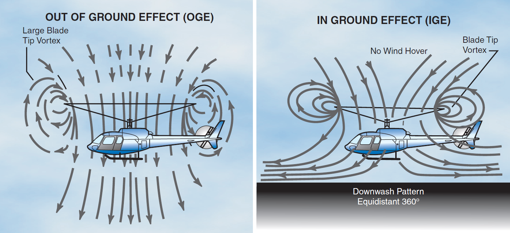

Conference paper: Understanding Rotor Aerodynamics: Lift, Induced Power and Blade Dynamics in Helicopters
Abstract
This short article explores some of the main aerodynamic problems that affect helicopters, including retreating blade stall, vortex ring state, and the challenges of maintaining rotor efficiency across different flight conditions. It uses ideas from classical helicopter aerodynamics and also a few newer studies on smaller rotorcraft. The aim is mainly to give a simple overview of why helicopters behave the way they do in the air, and why engineers still struggle with some parts of the physics, even though helicopters have been around for a long time.
Introduction
Helicopters don’t fly the same way as normal planes, and a lot of that comes down to the rotor system. Instead of having wings that stay still and move through the air, like commercial aeroplanes, for example, a helicopter’s blades spin, and the airflow around them is constantly changing. This makes the aerodynamics much more complicated, and sometimes quite unpredictable. One of the first things you learn is how the advancing and retreating blades experience very different airflow. When a helicopter moves forward, one blade moves into the airflow, and the other moves out of it. The advancing blade generates more lift, and the retreating one less; the rotor system has to constantly adjust to prevent the helicopter from rolling.
As the helicopter flies faster, the retreating blade eventually reaches a point where the airflow over it can no longer remain attached. This is known as retreating blade stall, and it produces much vibration, loss of control and a hard limit on how fast the helicopter can go. Seddon explains this quite clearly in Basic Helicopter Aerodynamics, showing how this imbalance in lift basically caps the forward speed of most conventional rotorcraft.
Hovering brings its own set of problems. When a helicopter is holding position in the air, the rotor drags air downwards. This air forms a recirculating flow beneath the helicopter. If the pilot starts descending too quickly while still trying to hover, the rotor can fall into its own turbulent wake. This is what causes vortex ring state, which results in a sudden drop in lift and a wobbly, unstable feeling. Bramwell’s Helicopter Dynamics goes into detail on this, but the main idea is that the rotor gets trapped in a messy airflow pattern that it created itself.

Figure 1. Diagram showing lift distribution on advancing and retreating rotor blades.
Aerodynamics sensitivity of Rotor Blades
One of the first things that becomes obvious when studying helicopters is that small aerodynamic changes can have a huge effect on how the aircraft flies. Even a slight increase in collective pitch changes the angle of attack on every blade, which can push parts of the retreating blade closer to stall. As noted in Seddon’s work (Seddon, 2011), the retreating blade is usually the limiting factor on forward speed because it does not receive sufficient airflow to maintain lift. This is why helicopters tend to pitch up slightly or use cyclic control to stay balanced as they speed up.
Blade Vortex interaction and Aerodynamic Instability
Another major feature of helicopter flight is the aerodynamic instability. Unlike fixed-wing aircraft, where the airflow is relatively stable, helicopter blades often run straight into the wake of another blade. Bramwell describes how this “blade–vortex interaction” creates sudden spikes in loading and is responsible for the well-known “blade slap” noise (Bramwell, 2001). These spikes don’t just make noise, but they also increase vibration levels and add stress to the rotor hub, swashplate, and blade roots. Over time, these forces can reduce the lifetime of the mechanical components.
Low Reynolds Number Effects on Smaller Rotorcraft
When focusing on smaller rotorcraft, such as mini helicopters and drones, the aerodynamics change once again. At these smaller scales, the Reynolds number is much lower, meaning airflow separates more easily and the blades lose lift more rapidly. Simply put, the Reynolds number compares the strength of inertia pushing air along the blade to how strongly viscosity slows it down. On a small scale, viscous forces become relatively more significant, so airflow tends to stick to the blade and separate earlier compared to a full-sized rotor. This phenomenon is explained by Pounds and Mahony (2005), who demonstrate that small helicopters are more susceptible to turbulence and gusts. Because the blades are lighter, their response to disturbances is quicker, making the aircraft less stable outdoors. This also clarifies why drones sometimes wobble even when control algorithms are effective.
Rotor Aerodynamics in Thin Atmospheres such as Mars
Conditions become even more extreme when you consider helicopters operating in thin air, like high-altitude environments, on Mars. Pillsbury et al. (2019) describe how the Mars helicopter needs unusually large, extremely lightweight blades that spin at very high speeds to produce enough lift. In these conditions, tiny variations in blade twist, chord length, or density can significantly change performance. Although these issues are most dramatic on Mars, the same principles can be applied on Earth: helicopters become less efficient as air density drops, and hovering requires more power. This general relationship between air density, disk loading and induced power is also outlined in Rotorcraft Aeromechanics (Johnson, 2013).
Rotor System Types and Specific Aerodynamics Hazards
There are also some aerodynamic problems that are more specific to certain rotor systems. For example, two-bladed, teetering rotor systems can experience mast-bumping in low-G situations. This happens when the rotor disc becomes unloaded and tilts too far, causing the hub to strike the mast. Although it is mainly a flight mechanics issue, it shows how the rotor always depends on a steady upward flow to remain stable. Bramwell (2001) discusses how rotor design, whether teetering, articulated, or hingeless, influences how the helicopter reacts to disturbances.
Trade-offs in Improving Helicopter Performance
Finally, when engineers try to improve helicopter performance, they always run into trade-offs. Increasing blade length makes the rotor more efficient, but causes structural challenges. Increasing rotor speed boosts lift, but can push the advancing blade tip close to the speed of sound, creating compressibility problems. Seddon (2011) points out that helicopter design often involves balancing one aerodynamic limit against another, which is why helicopters still cannot reach extremely high speeds compared to aeroplanes.
Conclusion
Helicopter aerodynamics results from the balance between lift production, rotor efficiency, and the limitations caused by complex airflow behaviours. The study of induced flow, blade element loading, and power demands reveals that even minor changes in rotor design or speed can significantly affect overall performance (Seddon 1990). Forward flight adds further challenges, such as lift dissymmetry and retreating-blade stall, requiring helicopters to depend on design solutions such as blade twist, flapping hinges, and swashplate control to remain stable (Bramwell 2001). Research on low-density environments, such as those for the Ingenuity Mars Helicopter, shows how rotor systems must be modified when aerodynamic conditions change, highlighting the rotorcraft’s performance sensitivity to air density and blade aerodynamics (Balaram et al. 2021).
Overall, this article shows that a helicopter’s flight depends on balancing aerodynamic forces, understanding airflow behaviour around the rotor, and designing blades that maximise lift while managing aerodynamic penalties. These principles form the foundation for both traditional helicopter design and future rotorcraft operating in extreme environments.
Presentation Recording
This video contains a recorded presentation explaining the key aerodynamic concepts discussed in this article, including voice-over and slides.
Last updated: 05 December 2025
Presentation recorded on: 4 December 2025, 21:47
References
Leishman, J.G. (2006) Principles of Helicopter Aerodynamics. 2nd ed.
Cambridge: Cambridge University Press.
Ansell, P. and Newman, J. (2011) ‘Aerodynamic challenges of micro air vehicles’,
Journal of Aircraft, 48(3), pp. 698–710.
Pounds, P. and Mahony, R. (2005) ‘Small-scale helicopter dynamics and control’,
Proceedings of the 2005 Australasian Conference on Robotics and Automation (ACRA),
pp. 1–6.